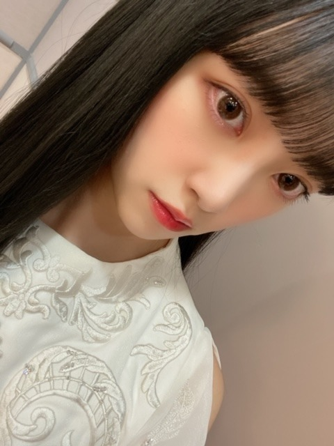
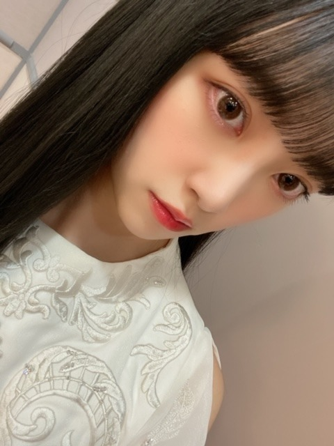

2020/0331Tueもちほっぺ
前に質問募集してたので
あ、そういえばと思い
なんとなく答えてみました〜
No.1001 これから試合で憂鬱
2019年9月25日 11:56
男の子の好きなファッションは？？
...デザイン、配色、組み合わせ
トータルしてシンプルでラフな格好が好きです！
北欧ブランドとか古着を着こなしてたら更に好き
No.1002 さおり
2019年9月25日 14:19
未央奈のそのはっきりしてる性格わたし
ほんとすきだなー٩( ´◡` )( ´◡` )۶
未央奈ってほんといい意味で昔から
変わってないそういうところすき！！
昔からって乃木坂入ってからしか知らないけど（笑）
未央奈のこの秋冬してみたい、チャレンジしてみたい事はなに？？
（ファッションやメイクなどでも可）
...ありがとう！
もう春やけど2020年秋冬は今までとはまた違ったスタイリッシュな感じになりたいな〜☺︎
最近モードな感じやパンツスタイルにハマってるからそれを極めたい！
No.1004 うー
2019年9月28日 04:40
みおなちゃんは落ち込んだ時なにしますか？？
それと、緊張しすぎてる時何しますか？？(；＿；)
就職するのが不安で仕方ないです
...信頼してる人に話を聞いてもらって、たまには泣く。笑
緊張は、緊張をも楽しむぞ！って自分に言い聞かせてる！緊張感無いことより立派だよ
No.1005 はや
2019年9月28日 13:47
写ルンですで撮ったりするんですか？
...するよー！最近はチェキにハマってるけど、写ルンです、フィルム、一眼でもまた撮り始めたいです☺︎
No.1006 美彩
2019年9月28日 22:25
未央奈ちゃん推しになりそうなんですが...いいですか？？
...嬉しいです♡
ふふ
No.1008 シュウ
2019年10月 2日 22:50
こんにちは、初めてコメントします！！ブログも755もモバメもこまめに出して下さりありがとうございます！！大好きです！！
質問です！動物園と水族館はどっちが好きですか！
...全然です！発信の場、コミュニケーションの場はこれからも大切にしていきます☺︎
え〜迷うけど水族館かなぁ
動物園も好きやけど水族館で哺乳類見るのが好きです
No.1010 ずーみんちゃん
2019年12月 2日 16:26
未央奈ちゃんはチークの入れ方にこだわったりしますか？？ハイライトの入れ方をInstagramでみて、チークの入れ方も可愛くする方法あったら教えてほしいです！冬はピンクっぽい火照った感じにいれてみたいんだけど、どうしても濃くなってしまう...。
...チークは顔が横長に見えるように丸を描きながら横に横に塗ってるよ！丸を描きながら塗ると顔に丸みが出る感じがしてかわいい雰囲気になる☺︎
火照った感じは練りチークがおすすめ！shiroの練りチーク良いよ！
No.241 たかひろ#24
2019年9月19日 19:47
ブログ更新ありがとうございます！
女性目線から見て、一番男性が見た目で気を遣って欲しいところはなんですか？
...髪型かなぁ もっさりしてる髪型よりさっぱりしてる髪型が好きなので！
No.242 匿名
2019年9月19日 19:47
ブログ更新ありがとう！いつも楽しみにしてます
質問です！
男子につけてほしい、またはオススメの香水はありますか？
あったら教えてください！！！
...エストネーションに売ってる香水は全部好きな香りです！
No.243 りくそん
2019年9月19日 19:47
タイタニック見たことありますか？
...もちろんです！でも水が怖いので2回しか観たことないです...見返そうかな
No.498 ポンポコリン
2019年9月19日 21:46
彼女と1年間付き合ってて1度も喧嘩したことないんですがそれはおかしいことですか？
...仲がいいのは良いことだと思いますよ！でもどちらかが我慢していたら良くないので本音で向き合うことをこれからも意識してみてください☺︎
No.499 高槻さん
2019年9月19日 21:46
ブログ更新ありがとうございます！( ˘ω˘ )
今まで見た夢で印象に残ってる夢は何ですか？？？
...たーくさんありますが怖い夢は結構忘れないですね。泣
以上
またやります(^^)

あ、ほくろどこにできたの？って聞かれましたが
新たにできたのは唇の下と横です
右頬には3つほくろが並んでます
ほくろどんどん増えてくなあ

ではは！
前に質問募集してたので
あ、そういえばと思い
なんとなく答えてみました〜
No.1001 これから試合で憂鬱
2019年9月25日 11:56
男の子の好きなファッションは？？
...デザイン、配色、組み合わせ
トータルしてシンプルでラフな格好が好きです！
北欧ブランドとか古着を着こなしてたら更に好き
No.1002 さおり
2019年9月25日 14:19
未央奈のそのはっきりしてる性格わたし
ほんとすきだなー٩( ´◡` )( ´◡` )۶
未央奈ってほんといい意味で昔から
変わってないそういうところすき！！
昔からって乃木坂入ってからしか知らないけど（笑）
未央奈のこの秋冬してみたい、チャレンジしてみたい事はなに？？
（ファッションやメイクなどでも可）
...ありがとう！
もう春やけど2020年秋冬は今までとはまた違ったスタイリッシュな感じになりたいな〜☺︎
最近モードな感じやパンツスタイルにハマってるからそれを極めたい！
No.1004 うー
2019年9月28日 04:40
みおなちゃんは落ち込んだ時なにしますか？？
それと、緊張しすぎてる時何しますか？？(；＿；)
就職するのが不安で仕方ないです
...信頼してる人に話を聞いてもらって、たまには泣く。笑
緊張は、緊張をも楽しむぞ！って自分に言い聞かせてる！緊張感無いことより立派だよ
No.1005 はや
2019年9月28日 13:47
写ルンですで撮ったりするんですか？
...するよー！最近はチェキにハマってるけど、写ルンです、フィルム、一眼でもまた撮り始めたいです☺︎
No.1006 美彩
2019年9月28日 22:25
未央奈ちゃん推しになりそうなんですが...いいですか？？
...嬉しいです♡
ふふ
No.1008 シュウ
2019年10月 2日 22:50
こんにちは、初めてコメントします！！ブログも755もモバメもこまめに出して下さりありがとうございます！！大好きです！！
質問です！動物園と水族館はどっちが好きですか！
...全然です！発信の場、コミュニケーションの場はこれからも大切にしていきます☺︎
え〜迷うけど水族館かなぁ
動物園も好きやけど水族館で哺乳類見るのが好きです
No.1010 ずーみんちゃん
2019年12月 2日 16:26
未央奈ちゃんはチークの入れ方にこだわったりしますか？？ハイライトの入れ方をInstagramでみて、チークの入れ方も可愛くする方法あったら教えてほしいです！冬はピンクっぽい火照った感じにいれてみたいんだけど、どうしても濃くなってしまう...。
...チークは顔が横長に見えるように丸を描きながら横に横に塗ってるよ！丸を描きながら塗ると顔に丸みが出る感じがしてかわいい雰囲気になる☺︎
火照った感じは練りチークがおすすめ！shiroの練りチーク良いよ！
No.241 たかひろ#24
2019年9月19日 19:47
ブログ更新ありがとうございます！
女性目線から見て、一番男性が見た目で気を遣って欲しいところはなんですか？
...髪型かなぁ もっさりしてる髪型よりさっぱりしてる髪型が好きなので！
No.242 匿名
2019年9月19日 19:47
ブログ更新ありがとう！いつも楽しみにしてます
質問です！
男子につけてほしい、またはオススメの香水はありますか？
あったら教えてください！！！
...エストネーションに売ってる香水は全部好きな香りです！
No.243 りくそん
2019年9月19日 19:47
タイタニック見たことありますか？
...もちろんです！でも水が怖いので2回しか観たことないです...見返そうかな
No.498 ポンポコリン
2019年9月19日 21:46
彼女と1年間付き合ってて1度も喧嘩したことないんですがそれはおかしいことですか？
...仲がいいのは良いことだと思いますよ！でもどちらかが我慢していたら良くないので本音で向き合うことをこれからも意識してみてください☺︎
No.499 高槻さん
2019年9月19日 21:46
ブログ更新ありがとうございます！( ˘ω˘ )
今まで見た夢で印象に残ってる夢は何ですか？？？
...たーくさんありますが怖い夢は結構忘れないですね。泣
以上
またやります(^^)
あ、ほくろどこにできたの？って聞かれましたが
新たにできたのは唇の下と横です
右頬には3つほくろが並んでます
ほくろどんどん増えてくなあ

ではは！
2020/03/31 17:42


コメント(284)
緊張感をほぐすって難しいです。緊張を楽しむ方法を探したのはもっと難しいですね。
755とモバメの内容は私には見えません。だからInsとブログからの発信には大事にします。
時に夢の内容をすぐ記録することは面白いですよ。記録しないとすぐ忘れちゃいます。夢って不思議な意識の現象ですね。
質問です！
◇日向坂46の推しメンと好きな楽曲教えて頂きたいです！
これからも応援しています！
rimi
ブログ更新ありがとうです
質問です！！答えていただけたら、めっちゃ嬉しい
◎私女の子で、最近お化粧にはまってやってるんですが、上手くビューラーでまつ毛あげたり、アイライン書いたり出来ないんです。コツとかがあれば教えてください！！
大好き
いつも応援してます(o´∀｀)o
おやすみなさい(。-ω-)zzz
ホクロ多いのコンプレックスだけど未央奈のは全然気にならいからちょっとというかだいぶ(๑꒪ㅁ꒪๑)u✩ra✩ya✩ma
堀ちゃん、黒髪ロング
お美しい！
最近、美しさが止まらないね！
堀ちゃん、大好きだよー
未央奈の一番好きな髪型は？
うたコンお疲れ様です
楽しみにしてるので！
怖い夢ってほんと忘れないですよね...
未央奈さんに質問です！僕は中学生ですが、肌ケアとかってしたほうがいいと思いますか？今は化粧水と洗顔だけしてます！
あと、全然違う話題ですが。聞くと気分が盛り上がる曲とかってありますか？
ずっと応援してます！頑張ってください！
質問コーナー増やしてほしい...！
色々と参考になります。
質問
1日の睡眠時間はどれくらいですか？
台湾に行った時に聞いた話では、顔のほくろは風水的にあまりよくないので、全部取っちゃう人もいるとか。
でも、チャームポイントにもなるから、自分は好きですけどね。
まいやんや梅ちゃん、卒業したまいまいもほくろが、チャームポイントですし♪☆
コメント送るの初です。
発信の場を大切にしたいとおっしゃるところが本当に素敵だと思います‼︎
インスタのストーリーも毎回楽しみにしています!
しかも難しめの人生相談にもちゃーんと答えられてるし
私も質問します！
もしも映画監督になって、主演を選ぶとしたらメンバーの誰を選ぶかな？あとどんな映画にしたい？
またブログ更新まってるね
【質問】 答えてくれたら嬉しいです‼︎
年下の女性ファン、どう思いますか？
もるもっと
どっち派ですか？？
みおちゃん大好きだよ〜
黒髪似合っててとても可愛い〜〜
二回も更新してくれてありがとう〜
来年受験、つまり受験生なので頑張ります。
受験終わったら、握手会行きます。
質問、学生の時に、得意だったり、好きだった教科ってありますか？それにまつわるエピソードもください！！
本当に可愛い❤️癒し！
ありがとう(*´∇｀*)
質問私もしたから、選ばれたら嬉しいな～！
忙しい中、丁寧に質問返しありがとう(’-’*)♪
今日二期生ライブのグッズ届きました！
待ちに待ってたよ～♪
今回、私は未央奈の個別グッズでアクリルガードキーホルダーとワッペン&缶バッジセットを買いました！
大事にします(*´-`)
明日から４月！
新年度だ～頑張ろう！
未央奈、本当に体調に気をつけてね！
元気な未央奈でいてね！
これで、大丈夫
だけど、紫外線には、気をつけておくべし
未央奈、体調とコロナ気をつけてね だいすき！！♡
ありがとう
お忙しいだろう中ブログを更新してくれてありがとうございます
質問を受け付けていたこと、忘れてない堀さん、素敵です
そうですね、3月31日、ということでね、個人的な話になりますけど、去年のこの日、僕はインテックス大阪で初めてアイドルの握手会に参加して、桜井さんとお会いしました。
そうですね、衛藤さんが乃木坂46から卒業した日ですね。
あれから今日までの間、いろいろなことがありましたけどね、こんなに早いのかというぐらい時が過ぎるのは早いものですね
いつもありがとうございます！
うたコン観ました！
女性の髪型は、そうですね、個人的には堀さんみたいなストレートのロングが好きですね
そうですね、堀さんのことも乃木坂46のことも応援したい気持ちでいっぱいですからね、4月からもまたよろしくお願いします！
それでは、健康にはお気をつけてお過ごしください！
未央奈さんさすがですw
ファンサービスやっぱりみんな嬉しいものさ☆
でも、出来るときで無理ないくらいでね(*・∀・*)ノ
うたコンおつかれさまー！他の人もいってたかもだけど衣装と髪色がほんと合ってると思った！
しあわせの保護色聞くたびに良さが増してる気がしたよ！
まいやんやさゆにゃんがいる間の披露をあと何回見れるんだろうってなっちゃうけど、みんな楽しそうだから寂しいだけじゃないよね!
残り大事に１つ１つ心に刻んでいきましょ
ほくろ２つ出来たんだね。増えてくよねー
何か20超えてから出来るようになった気がする。これからもまだ増えてくんだろうねー(；・ω・)ﾔﾚﾔﾚ
明日から４月だねー
早く世の中に春よ来い～！
でわわ、おやすみ☆
私のクラスで堀ちゃんのことを広めたらいろんな子が「ファンになる！」って言ってました！みんなで握手会行きたいねって言ってるんですが、女の子のどんな服装が好きですか？教えてください〜!!!!
誰に何を言われても、動ぜず、心にしっかりした芯を持って、
生きている堀ちゃんは，尊敬するし、大好きです。
私が，そういうタイプじゃ無いので、憧れでもあります。
これからも頑張ってください！
この愛は，誰にも負けません！
質問します！返答は，いつでも大丈夫です。
・乃木坂46の曲のMVで，1番好きな楽曲は，何ですか？
最後に・・・
・私は，これから中学生になるんですけど，受験をしたので，
同級生とは，違う学校に行くの。それでね。
みんなとは，別の中学校に行くのに，好きな男の子と，
同じ中学校に行くのを噂で聞いてしまって，
私は，どうしたら良いですか？
仲の良い友達とも別れてしまって悲しいです。
堀ちゃんから，応援してもらったら，めちゃくちゃ頑張れま
す。
もうちょー好き❤️好き❤️好き❤️好き❤️好き❤️好き❤️好き❤️
大好き❤️大好き❤️大好き❤️大好き❤️大好き❤️大好き❤️大好き❤️大好き❤
写真でも，可愛いけど，実物の方が，堀ちゃんは，可愛いねー❤️握手会で，死にそうになって，前の人が喋ってるの見ただけで，涙目になった。天使。
新曲のMVのお気に入りのところは，卒業しちゃうまいやんとの，ダンスシーンが好き❤️一期生の推しまいやんと，
二期生の推し堀ちゃんのダンスシーン，女の私でも，メロメロになっちゃいました。
またコメントするねー
いつもありがとう
質問です
遠距離恋愛ってありだと思いますか？
私も岐阜県に住んでいるのですが、
未央奈ちゃんと同じ県に生まれてこれたことを誇りに思います！
ザ・クロッシングって映画見たことありますか？おもしろそうだと思ってて、前に未央奈ちゃんがおもしろかったってどこかで言っていたような気がするんですけど…
どうぶつの森が大ブームになっているね！
まさに乃木坂の中でのプチブーム
未央奈ちゃんに質問です！
東京の中や他のところだったりで好きな街とか
ありますか？
コメントする